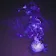
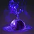
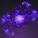
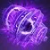
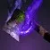
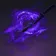
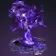
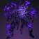
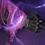

效果
| 名称 | 图标 | 说明 |
|---|---|---|
| 吞食 | 激活时恢复 70 生命值并提供吞食，持续 10+5 秒。 重新激活再恢复 70 生命值并刷新 5+3 秒。 吞食期间击杀： 恢复 70 生命值，获得手雷技能能量，并刷新 5+3 秒。 击杀回能：T1 级战斗人员 7.5% ｜ T2 11.6% ｜ T3 13.75% ｜ T4 20% ｜ 20%。 | |
| 隐身 | 隐形并获得多项增益，同时最大雷达射程降到 24 米，持续 5+2 秒。做出攻势动作立即结束。 雷达增强装置模组可移除雷达缩减。重新施加隐身时，只要没破隐，会刷新持续最久的那一份。 战斗人员无法直接锁定使用者，通常朝最后可见的位置射击或干脆停火；做出高噪声动作时会追踪但不射击。 看不到使用者的生命值条；使用者的雷达每 5 秒才脉冲 0.6 秒，做高噪声动作时也会脉冲。 会追踪（追踪投射物）或扫描（烈焰手雷）的武器与技能不会锁定使用者，已锁定的也会脱锁。 攻势动作（立即破隐）： 射击 ｜ 手雷、近战、超能或瞬移技能 ｜ 放置屏障或裂痕 ｜ 召唤载具。 高噪声动作（暴露位置但不破隐）： 开始冲刺 ｜ 非瞬移的移动技能 ｜ 猎人职业技能。 | |
| 覆盖护盾 | 虚空覆盖护盾最多 45 生命值，持续 10+5 秒。 护盾的生命值部分对战斗人员有 70% 伤害抗性，等效约 150 生命值。 打在虚空覆盖护盾上的伤害不会中断生命值恢复。 可以与其它覆盖护盾叠加（还治彼身、职业属性给的那层等），多层按先进先出消耗。 | |
| 虚空裂口 | 虚空元素拾取物。 拾取提供 11.25% 职业技能能量。 使用者生成的虚空裂口对盟友不生效。 停留 25 秒后消失，两次生成之间有 5 秒冷却。 | |
| 压制 | 被压制的战斗人员被强制打断当前技能，10 [5] 秒内无法使用技能。 被压制的与战斗人员还会陷入迷失、无法射击。 被压制的被强制退出当前超能与超凡，并且无法使用手雷、近战、职业、超能、移动技能与超凡。 过载勇士被压制时进入眩晕。 | |
| 不稳定 | 不稳定的战斗人员在累计受到 190 [200] 伤害后、或死亡时触发爆炸，在 5 米半径内最多造成 145 [80] 虚空技能伤害。 持续 10 [6] 秒，到期未触发则无害消失；爆炸触发后减益随之移除。 施加不稳定那一次命中的伤害不计入引爆阈值。 爆炸后需要 1 秒冷却才能对同一名战斗人员再次施加。 | |
| 不稳定弹药 | 虚空武器造成伤害时施加不稳定。 不稳定子弹激活期间，对勇士的武器伤害提高 10%。 | |
| 虚弱 | 被虚弱的战斗人员受到的伤害提高 15% [7.5%]，移动速度降低 20%，持续 6 [2.5] 秒。 被虚弱的战斗人员精度下降、动作变慢。 部分来源施加的是显著更强的虚弱，伤害提高 30%（PvP 通常 50%）： 暗影箭矢：莫比乌斯对被束缚的战斗人员提供 30% [50%]。 邪冬的头盔「领主之末」对受其虚弱爆裂影响的战斗人员提供 30% [30%]。 牵引器火炮的冲击波与法夫纳（量子新星激活时）提供 30% [50%]。 暗影箭矢：狩猎陷阱另成一档，提供 35% [50%?]。 法夫纳、费尔温特与牵引者的虚弱时长可以被任何其它虚弱效果延长。 |
碎片
| 碎片 | 图标 | 说明 | 属性变化 |
|---|---|---|---|
| 休止回声 | 终结技对 ? 米内的战斗人员施加不稳定。 击杀不稳定的战斗人员生成虚空裂口。 | — | |
| 扩张回声 | 蹲伏速度固定为 4 米/秒，蹲伏时雷达分辨率翻倍。 蹲伏速度不会被压到 4 米/秒以下，与横越之步同理。 | +10 武器 +10 超能 | |
| 霸道回声 | 压制一名战斗人员： 提供 +30 武器属性、10 秒内 4% 前向移动加成，并补满已准备的武器（4 秒内置冷却）。 击杀被压制的战斗人员生成虚空裂口。 | +10 手雷 | |
| 交换回声 | 近战击杀按战斗人员等级提供手雷技能能量： T1 级战斗人员 7.5% ｜ T2 11% ｜ T3 与 16.25% ｜ T4、与 25%。 | +10 近战 | |
| 驱逐回声 | 虚空技能击杀使战斗人员爆炸，在 7 米半径内最多造成 160 [130] 伤害。 | +10 超能 | |
| 收割回声 | 击杀被虚弱的战斗人员： 生成一枚能量球（提供 2.5% 超能能量）与一枚虚空裂口。 生成能量球后有 10 秒冷却。 | — | |
| 失稳回声 | 手雷击杀为虚空武器提供不稳定子弹，持续 11.25 [7.5] 秒。 不要求是虚空手雷击杀。 | +10 近战 | |
| 吸吮回声 | 近战击杀为自己与 ? 米内的盟友开始生命值恢复。 | +10 生命值 | |
| 朦胧回声 |  | 终结技提供隐身，持续 5+2 秒。 | +10 职业 |
| 坚韧回声 | 施加给使用者的虚空增益持续更久： 吞食 +50% ｜ 隐身 +40% ｜ 虚空覆盖护盾 +50%。 | -10 武器（猎人） -10 生命值（泰坦） -10 职业（术士） | |
| 补能回声 |  | 手雷技能伤害提供近战技能能量，每次伤害实例只触发一次（同时命中多名战斗人员算一次）。 3% ｜ 散射、虚空尖刺、虚空墙壁、涡流。 8% ｜ 量子光束、手持超新星、磁性、抑制。 与坚不可摧不兼容。 | +10 手雷 |
| 残存回声 | 量子光束 ｜ 持续时间延长 ?%。 虚空尖刺 ｜ 持续时间 +50%，并提前 0.1 秒开始造成伤害。 虚空墙壁 ｜ 持续时间 +50%。 涡流手雷 ｜ 持续时间 +25%，并提前 0.13 秒开始造成伤害；被混沌加速强化过的涡流手雷 +55%。 | — | |
| 报复回声 |  | 8 米内被 3 名以上战斗人员腹背受敌时，击杀额外提供超能能量： 3 名 +0.3% ｜ 4 名 +0.65% ｜ 5 名 +1% ｜ 6 名 +1.6% ｜ 7 名 +2.3%。 两次激活之间有 1 秒冷却。 | — |
| 饥饿回声 | 拾取能量球或虚空裂口提供吞食，持续 5+2.5 秒。 | -10 职业 | |
| 弱化回声 | 虚空手雷命中时施加虚弱，持续 6 [2.5] 秒。 | -10 手雷 | |
| 警惕回声 |  | 处于重伤时击杀： 提供虚空覆盖护盾，持续 5+2.5 秒。 激活后有 8 秒冷却。 | — |
手雷技能
| 手雷 | 图标 | 说明 | 基础冷却 |
|---|---|---|---|
| 量子光束 | 重型弹道 ｜ 扫描 接触时扫描 10 米视线内最多 2 名战斗人员，延迟 1 秒后放出减速飞行的量子光束追向它们。 光束造成 575 [65] 伤害，以 ? 米/秒的速度飞行、最长持续 ? 秒，本体有 10 生命值，可以被摧毁。 混沌加速： 扫描目标提高到 4 名、范围 12 米，光束飞行速度提高 ?%、伤害提高 25%，落地 1 秒后再触发一次。 | 基础冷却 219.5 秒 回复倍率 0.5× | |
| 手持超新星 | 装备磁性、虚空尖刺、抑制或虚空墙壁手雷、并带星相「混沌加速」时的形态 被动提供 1.154 倍手雷充能速度。 按住［手雷］蓄力 ? 秒后准备就绪，最多维持 4.5 秒。 松开［手雷］： 向前发出一道短射程虚空爆炸，造成 150 [50] 伤害并强力击退 12.5 米扇形内的战斗人员。 爆炸同时释放 9 发虚空矢弹，最远 12.5 米，每发在 3 米半径内造成 375 [15] 溅射伤害并施加不稳定。 9 发矢弹加初始爆炸全中时最多合计 3525 [185] 伤害。 对自身伤害降低 75%，也不会给自己施加不稳定。 | ||
| 磁性手雷 | 轻型弹道 ｜ 轻微追踪 ｜ 粘附 ｜ 快速 附着到战斗人员或表面上，1.2 秒后第一次爆炸，再过 0.6 秒二次爆炸。 每次爆炸在 5 米内最多造成 472 [75] 伤害，两次合计最多 946 [150]。 | 基础冷却 151.5 秒 回复倍率 0.75× | |
| 散射手雷 | 重型弹道 接触时爆炸，造成 5 [1] 伤害并在 4 米范围内释放 8 枚子弹药。 每枚子弹药爆两次：第一次在 4 米内最多造成 70 [16] 伤害，0.5 秒后第二次最多造成 115 [20] 伤害。 8 枚全部打满时最多合计 1480 [288] 伤害。 混沌加速： 多 4 枚子弹药共 12 枚，子弹药强力追踪 5 米内的战斗人员，并对战斗人员伤害提高 25%。 | 基础冷却 151.5 秒 回复倍率 0.75× | |
| 抑制手雷 | 中型弹道 速度降到足够低后爆炸，爆炸前有短暂延迟。 爆炸在 9 米范围内最多造成 863 [150] 伤害并施加压制，持续 10 [5] 秒。 使用者不会被自己压制。 | 基础冷却 175.6 秒 回复倍率 0.625× | |
| 虚空尖刺 | 中型弹道 ｜ 壁挂 附着到表面和战斗人员身上，0.67−0.1 秒后开始投射虚空光能。 光能每 0.217 秒造成 80 [28] 伤害，最多 16+9 次，持续 3.5+1.75 秒。 持续时间内最多合计 1280（延长后 2000）[448（延长后 700）] 伤害。 | 基础冷却 175.6 秒 回复倍率 0.625× | |
| 虚空墙壁 | 中型弹道 ｜ 持续伤害场域 接触时爆炸并立起一道跨度 ? 米、垂直的虚空光能墙，展开过程中最多造成 173 [46] 伤害。 生成 0.85 秒后开始造成伤害，每 0.2 秒 120 [35]，最多 18+9 次，持续 3.75+1.875 秒。 持续时间内最多合计 2160（延长后 3240）[630（延长后 945）] 伤害。 | 基础冷却 175.6 秒 回复倍率 0.625× | |
| 涡流手雷 | 中型弹道 ｜ 持续伤害场域 接触时在 5 米内最多造成 195 [25] 伤害，并生成一团虚空涡流。 命中 0.833 秒后开始把 5? 米内的战斗人员往里拉。 生成 1.45−0.13 秒后开始伤害，每 0.267 秒对 4 米半径内的战斗人员造成 78 [20] 伤害，最多 12+7 次，持续 4+1 秒。第 13 至 20 跳有衰减，最多 54 [?] 伤害。 场域内最多合计 990（延长后 1536）[240（延长后 380）] 伤害。 混沌加速： 命中 0.617 秒后开始把 ? 米内的战斗人员往里拉，生成 1.2 秒后开始伤害，每 0.267 秒 78 [20] 伤害，最多 17+7 次，持续 4.3+2.3 秒，半径扩大到 7 米。 第 17 至 24 跳有衰减，最多 54 [?] 伤害。合计最多 1380（延长后 1926）[340（延长后 480）] 伤害。 | 基础冷却 219.5 秒 回复倍率 0.5× |
猎人
| 名称 | 图标 | 说明 | 冷却与槽位 |
|---|---|---|---|
| 近战技能 | |||
| 鬼灵激涌 | 向前挥砍最远 12 米，对 2 米内的战斗人员造成 595 [?] 伤害并穿过它们。 每命中一名战斗人员提供 +10 虚空覆盖护盾。 对受虚空减益影响的战斗人员，或被「伺机而动」标记的战斗人员，伤害提高 100% [?%]。 击杀额外提供 +45 虚空覆盖护盾并返还 60% 近战技能能量。 | 基础冷却 130.7 秒 回复倍率 0.9× | |
| 陷阱炸弹 | 烟幕弹可附着表面最多 9 秒，附着期间会在战斗人员雷达上脉冲。 为接触点 6 米内的盟友提供隐身，持续 5+2 秒。 探测到 ? 米内的战斗人员或直接命中战斗人员时爆炸，生成烟幕。 接触造成 33 [10] 伤害，爆炸在 ? 米范围内最多造成 120 + 24 [40 + ?] 伤害。 接触与爆炸都施加虚弱与迷失，持续 8 [2.5] 秒。 烟幕在引爆后停留 5 [2] 秒，每 0.6 秒造成一次持续伤害并使战斗人员迷失。 0.87 秒后起跳伤害 12.65 [?]，每跳提高 13%，第 9 跳最多 24.8 [?]，5 秒内合计最多 156.7 [?]。 | 基础冷却 130.7 秒 回复倍率 0.9× | |
| 超能技能 | |||
| 鬼灵利刃 | 伤害抗性：90% [隐身 59%? ｜ 可见 58%] 基础持续：23.5 秒，或每秒消耗 4.25% 超能能量；不处于隐身时消耗加快 50% 轻攻击 ｜ 消耗 5%? 超能能量。 造成 1107 [?] 伤害并解除隐身，每秒攻击 ? 次。连续命中最多提供 25%? 的近战攻速加成。 重击 ｜ 消耗 15%? 超能能量。 打出上勾拳，造成 1620 [?] 伤害，施加虚弱并提供隐身。 允许无限使用「捕猎者的伏击」，每次代价 15%? 超能能量。 | T2 级超能 基础冷却 556 秒 | |
| 暗影箭矢：狩猎陷阱 | 伤害抗性：90% [53%] 发射一枚陷落锚，附着到表面或战斗人员身上，接触时把 12.5 米内的所有战斗人员拉向它。 锚在探测到 12.5 米内有战斗人员 1 秒后激活，或 30 秒后自动激活。 陷落锚接触造成 2583 [?] 伤害，对 ? 米内的战斗人员施加陷落虚弱与压制，锚本体有 ? 点构造体生命值。 锚 12.5 米内的战斗人员被束缚，施加陷落虚弱、压制与标记，持续 30 [10] 秒。 对被束缚战斗人员造成的身体伤害，50%（基础）会同时施加给其它被束缚的战斗人员。 陷落虚弱另成一档，使受到的伤害提高 35%。 陷落锚默认持续 12 秒，击杀被束缚的战斗人员延长 0.5 秒，最长 25 秒。 | T4 级超能 基础冷却 455 秒 | |
| 暗影箭矢：莫比乌斯箭袋 | 伤害抗性：90% [53%] 基础持续：16 秒（装备奥菲斯钻机为 20 秒） 每次激活最多发射 2 轮，每轮 3 枚莫比乌斯锚。 激活期间造成伤害会线性提高莫比乌斯锚与弓箭武器的伤害，累计约 3000 伤害后达到上限：锚 +127%，弓箭 +150%（弩 +75%）。 伤害需求无视力量等级差，按实际造成的伤害计算。 莫比乌斯锚接触造成 1076 [?] 伤害，并施加压制、不稳定与虚弱，锚本体有 ? 点构造体生命值。 锚 7 米内的战斗人员被束缚，对它们的伤害提高 20%，并被施加虚弱与压制。 身体伤害的 50%（基础）同时施加给其它被束缚的战斗人员。 莫比乌斯锚默认持续 6 秒，击杀被束缚的战斗人员延长 0.5 秒，最长 25 秒。 | T3 级超能 基础冷却 500 秒 | |
| 星相 | |||
| 伺机而动 |  | 获得虚空隐身时，或距上次标记满 10 秒时： 把 45 [25] 米内一名非战斗人员标记为优先目标，优先选离准星更近的。 优先目标存活期间提供伺机而动增益，目标本身则无限期（PvP 15 秒）承受「追猎掠食」减益。 击杀优先目标： 在其死亡位置释放一团虚弱烟幕。 提供 1 层成功狩猎（持续 ? 秒，最多 3 层）与 ?% 手雷、近战与职业技能能量。 每层提供 +? 稳定性、+? 填装速度，换弹时长 ×0.?。 烟幕立即在 5 米范围内造成最多 133 [?] 虚空近战伤害。 接触到的战斗人员被虚弱 6? 秒，处在烟里时迷失。 使用者与盟友获得虚空隐身，持续 5+2 秒。 烟幕停留 7? 秒，范围 ? 米，每 0.6 秒造成一次递增的持续伤害：0.87 秒后起跳 12.65 [?]，每跳提高 ?%，第 9 跳最多 24.8 [?]，7 秒内合计最多 ? [?] 伤害。 功能上，烟幕就是一枚立即引爆、半径与时长更大的陷阱炸弹，甚至能触发近战相关效果。 | |
| 潇洒行刑者 |  | 击杀受虚空减益影响的战斗人员： 提供隐身持续 8+3.2 秒，以及真实视界持续 4 秒。 隐身期间可以发动优雅处决： 近战攻击伤害提高 300% [20%]，使战斗人员虚弱持续 5 [2.5] 秒，并延长近战突进射程。 触发后会附带「过于优雅」，在 2 [12] 秒内阻止再次触发优雅处决。 | |
| 捕猎者的伏击 |  | 按［空中移动］： 消耗一次职业技能充能触发快速坠落，并触发已装备职业技能的使用效果。 若隐身正生效，快速坠落会再次施加它。 快速坠落打出猛击，最多造成 630 [71 守护者 ｜ 700 构造体] 虚空伤害；有虚空增益时伤害提高 50%。 造成伤害时恢复生命值，击杀提供吞食持续 10+5 秒。 同时装备隐身步法时： 快速坠落改为施加迷失与虚弱，并为自己与 10 米内的盟友提供隐身。 星相伤害随超过 100 的职业属性缩放，200 属性时最多 +65%。 | |
| 隐身步法 | 闪身动画替换为更快、更远的一种，并提供隐身，持续 5+2 秒。 | ||
 泰坦
泰坦
| 名称 | 图标 | 说明 | 冷却与槽位 |
|---|---|---|---|
| 近战技能 | |||
| 圣盾强袭 | 与其它肩撞类技能共用的规则： 需要冲刺 1.25 秒；未命中战斗人员时消耗 15% 近战技能能量；开火状态下无法在滑铲期间使用；被肩撞直接命中的守护者近战突进失效 0.5 秒。 向前突进 6.8 米，自动瞄准射程内的战斗人员。 命中战斗人员： 造成 1073 [110] 直击伤害。 对命中目标后方最远 7 米的战斗人员造成 391 [40] 径向伤害。 对命中目标 2 米内的战斗人员施加压制。 用圣盾强袭击杀提供 45 生命值的虚空覆盖护盾，持续 10+5 秒。 | 基础冷却 131.7 秒 回复倍率 0.7× | |
| 圣盾投掷 | 向前掷出虚空护盾，每次最多跳弹 4 次，会尝试追踪战斗人员并受重力影响。 每次命中造成 400 [70] 直击伤害，并提供 15 生命值的虚空覆盖护盾。 | 基础冷却 131.7 秒 回复倍率 0.9× | |
| 超能技能 | |||
| 哨兵圣盾 | 伤害抗性：90% [53%] 基础持续：17 秒，或每秒消耗 5.88% 超能能量 轻攻击 ｜ 每次消耗 4.5% 超能能量，连击最后一击消耗 2%。 扎根 3 连击造成 797 [?] 与 856 [?] 伤害；空中 2 连击造成 797 [?] 伤害。 连击最后一击在 ? 米锥形范围内造成 1516 [?] 伤害。 重击 ｜ 生成一面盟友可以射穿的坚不可摧屏障，代价是移动速度降低 20%。 铸造者对所有正面伤害免疫，包括敌方。触碰屏障的战斗人员每 0.05 秒受到 7 [?] 伤害。 格挡伤害会生成能量球，提供 2.5%? 超能能量（1.5 秒内置冷却）。 格挡越多，圣盾投掷伤害越高，累计格挡 ? 伤害后最高 +1787%；持续格挡还能延长超能时长，最多 ?%。 的伤害被完全无效化，也不会在屏障上触发命中相关效果；技能伤害会扣超能能量，但同时部分延长超能。 站在屏障后方 5 米内的盟友： 获得 25% 伤害提高、45 生命值的虚空覆盖护盾、+50 操控性与 +50 填装速度，所有武器每 2.5 秒补满弹药。 他们的虚空覆盖护盾在 3 秒未受伤后按每秒 9 生命值恢复。 屏障后方的盟友越多，格挡时的被动超能能量吸收越少：1 名 20% ｜ 2 名 35% ｜ 3 名 ?% ｜ 4 名 ?% ｜ 5 名 50%。 手雷技能 ｜ 不消耗超能能量，两次投掷之间有 3 秒冷却。 投出哨兵圣盾，造成 723 [?] 伤害，可接触反弹最多 ? 次，并追踪 ? 米内的战斗人员。 | T2 级超能 基础冷却 556 秒 | |
| 暮光军火 | 召唤 3 把虚空斧并朝准星方向抛出。 斧头接触时在 ? 米范围内最多造成 1250 [?] 伤害并把战斗人员向内拉扯，0.6 秒后爆炸，在 ? 米范围内最多造成 1750 [?] 伤害并施加虚弱。 爆炸后斧头落地成为可携带武器，最多停留 20 秒。 可携带的斧头有 10 发弹药，最多可持有 15 秒。 轻攻击 ｜ 挥砍造成 581 [175] 伤害并施加虚弱，消耗 1 发。 重击 ｜ 把斧头当爆炸弹体投出，消耗全部弹药。接触造成 1337 [?] 伤害，爆炸在 ? 米范围内最多造成 830 [250] 伤害并使受损战斗人员虚弱。 斧头伤害只能被虚空激涌修正与减益提高。 | T3 级超能 基础冷却 500 秒 | |
| 黎明护罩 | 施法动画期间伤害抗性：?% [26.5%] 施放时提供一次手雷技能充能，并生成 3 枚能量球，每枚提供 2.3% 超能能量。 投出一座 8000 构造体生命值的防护穹顶，对战斗人员有 75%? 伤害抗性，内含一枚 200 生命值的核心。 穹顶以核心为中心覆盖 8 米半径，持续 30 秒；摧毁核心即摧毁护罩。 对穹顶本身造成的伤害提高 50%，技能伤害另行缩放。 除非穹顶内有战斗人员，否则所有弹体无法进出；穹顶内有战斗人员时，铸造者与盟友可以射穿。 部署或重新部署时会把 15 米内的战斗人员向内拉。超能属性最多把持续时间再延长 10 秒（200 超能）。 站在穹顶内： 铸造者近战伤害 +50%，铸造者的近战击杀会生成能量球（每次施放最多 5 枚）。 战斗人员持续虚弱，? 米内的战斗人员被嘲讽走向穹顶内的。 光能护甲每秒生成 15 点虚空覆盖护盾，并提供 40% [?%] 伤害抗性、+50 操控性与 +50 填装速度。 重新部署： 核心在部署 3 秒后可由铸造者拾起，每次施放最多两次，旋转的能量球表示剩余次数。 持有期间，剩余护罩时长每（77 ÷ 拾取时剩余的光能护甲秒数）减少 1 秒。 | T4 级超能 基础冷却 455 秒 | |
| 星相 | |||
| 堡垒 | 超能施放时： 为 15 米内的盟友提供 45 生命值的虚空覆盖护盾。 施放强化屏障时： 为自己与 15? 米内的盟友提供 45 生命值的虚空覆盖护盾。 强化屏障受到的伤害提高 20%。 位于强化屏障后方时： 每秒生成 11 点虚空覆盖护盾。 仅限熔炉竞技场：巍峨屏障基础冷却覆盖为 100 秒，集结屏障覆盖为 80 秒。 | ||
| 克制破坏 |  | 虚空技能伤害施加不稳定，而不稳定爆炸本身也计为虚空技能伤害。 不稳定爆炸为自己与 40 米内的盟友恢复 90 生命值。 | |
| 进攻堡垒 | 为哨兵圣盾超能额外提供圣盾投掷。 虚空覆盖护盾激活时，或身处黎明护罩内时： 击杀提供 9% 手雷与 9% 近战技能能量。 近战伤害 +160% [20%]，近战突进射程提高到 5.5 米。 近战击杀生成 10 生命值的虚空覆盖护盾。 基础近战命中计为虚空充能近战命中（末日牙护肩与断绝末路除外）。 | ||
| 坚不可摧 |  | 按住［手雷］召唤虚空护盾，装备时手雷冷却覆盖为 152 秒。 护盾对格挡的伤害提供 95%? [64%] 抗性，并嘲讽正面的战斗人员；碰到护盾的战斗人员陷入迷失。 每秒生成 10 点虚空覆盖护盾，持续 5+2.5 秒，期间每秒消耗 7.5% 手雷能量。 格挡伤害会让前向移动速度降低 50%?（持续 0.5? 秒），同时提供手雷能量——回能逐渐降低（随时间，或随已格挡伤害?），? 秒后降到 ?%。 护盾本身没有移速惩罚，只是不能攀爬；冲刺会取消它。 装备哨兵圣盾时，格挡任意伤害都会为盟友生成一枚能量球，提供 2.5% 超能能量（4.5 秒内置冷却）。 松开［手雷］或耗尽手雷能量时： 释放一次正面爆炸，消耗 50% 手雷能量，对 11 米内的目标造成伤害。 未格挡任何伤害时最少 430 [64?]，随已格挡伤害提高，最高 1584 [178?]。 用坚不可摧击杀提供吞食，持续 10+5 秒。 | |
 术士
术士
| 名称 | 图标 | 说明 | 冷却与槽位 |
|---|---|---|---|
| 近战技能 | |||
| 口袋奇点 | 固有 2 次近战技能充能。 发射一颗持续 2 秒的不稳定虚空能量球。 奇点追踪 2? 米内最近的战斗人员，接触时爆炸： 把 3.75 米内的战斗人员击退，造成 527 [60] 伤害并施加不稳定。 用自动近战使用时： 消耗一次充能发起近战突进，仍然造成击退与不稳定，但伤害按距离降低 65% 至 50%，越近越低。 被口袋奇点命中的守护者在 0.5 秒内无法近战突进，正在进行的滑铲也会被打断。 | 基础冷却 131.7 秒 回复倍率 0.9× | |
| 超能技能 | |||
| 新星炸弹：灾变 | 伤害抗性：90% [49%] 释放一颗缓慢移动、带追踪的新星炸弹，接触或被打爆时引爆，在 12 米半径内最多造成 3241 [?] 伤害。 炸弹本体有 400 构造体生命值，铸造者对自己的炸弹造成的伤害提高 300%。 引爆时释放 6 枚追踪器缓慢追敌，每枚在约 4 米半径内最多造成 649 [?] 伤害，本体各有 100 构造体生命值。 炸弹与追踪器都可以被打伤后在半空中引爆，铸造者对它们的伤害显著更高。 | T3 级超能 基础冷却 500 秒 | |
| 新星炸弹：涡流 | 伤害抗性：90% [49%] 释放一颗快速移动、带弧线的新星炸弹，接触时引爆，在 ? 米范围内最多造成 3021 [?] 伤害。 引爆 0.43 秒后生成一团奇点，立即把战斗人员向内拉扯。 奇点对 ? 米内的战斗人员每 0.13 秒造成 52 [?] 伤害，持续 10 秒，并每 ? 秒把 ? 米内的战斗人员拉向自己。 | T3 级超能 基础冷却 500 秒 | |
| 新星折跃 | 伤害抗性：90% [58%] 基础持续：24.5 秒，或每秒消耗 4.1% 超能能量 轻攻击 ｜ 消耗 5% 超能能量。 在 6 米半径内最多造成 964 [200] 伤害并施加不稳定，最大衰减降低 50% 伤害。 长按［开火］0.6 秒可蓄力，把约 14 米内的战斗人员拉向自己，并把伤害与半径线性提高 120%；蓄力期间移动速度下降 ?%。 重击 / 冲刺 ｜ 发动暗影瞬移，消耗 3.5% 超能能量。 朝输入方向快速加速并释放 4 枚虚弱追踪器（每个主方向一枚）。 追踪器瞄准 8 米内的战斗人员，接触造成 193 [?] 伤害并施加虚弱。 | T2 级超能 基础冷却 556 秒 | |
| 星相 | |||
| 混沌加速 | 按［手雷技能］给手雷过载，并额外提供一次手雷技能充能。 量子光束 ｜ 追踪目标从 2 个增至 4 个，飞得更快，伤害提高 25%，落地 1 秒后再触发一次。 散射 ｜ 多 4 枚子弹药共 12 枚，子弹药强力追踪 5 米内的战斗人员，对战斗人员伤害提高 25%。 涡流 ｜ 持续时间 +7.5%，半径 +70%，提前 0.275 秒开始造成伤害，提前 0.2 秒开始拉扯。 磁性、虚空尖刺、抑制与虚空墙壁 ｜ 改为释放一道短射程虚空爆炸并施加不稳定，被动提供 1.15 倍手雷充能速度。 | ||
| 旧神之子 | 施放裂痕时提供虚空灵魂就绪，持续 25 秒，最多叠 2 个。 武器命中战斗人员时会发射一个虚空伙伴飞过去，到达后投射吸取场域。 吸取场域每 0.7 秒对 10 米内的战斗人员造成 41 [10] 虚空手雷技能伤害并施加虚弱持续 4 [2.5] 秒，最长 9.25 秒。 范围内的战斗人员还会被压制。 伙伴本体有 150 生命值，可以被摧毁；开始主动消耗前有 ?% 伤害抗性。 虚空灵魂造成伤害期间按所选职业技能提供不同加成： 治愈裂痕 ｜ 每 1.4 秒提供 4% 手雷与近战能量。 强能裂痕 ｜ 每 1.4 秒恢复 25 生命值。 在吸取场域内被击杀的战斗人员按等级提供职业技能能量： T1 级战斗人员 10% ｜ T2 15% ｜ T3 20% ｜ T4 以上 50% ｜ 33.4%。 | ||
| 虚空供养 | 虚空技能击杀提供吞食，并把它升级为强化吞食。 强化吞食： 激活时恢复 140 生命值，持续 10+5 秒；重新激活再恢复 140 生命值并刷新 5+3 秒。 强化吞食期间击杀： 恢复 140 生命值，获得双倍手雷技能能量，并刷新 5+3 秒。 击杀回能：T1 级战斗人员 15% ｜ T2 23.2% ｜ T3 27.5% ｜ T4 40% ｜ 40%。 | ||
| 灵魂虹吸 | 充能近战命中后，近战技能被替换为灵魂虹吸，持续 20 秒。 使用时束缚 20 米内最多 4 名战斗人员，每 0.2 秒造成一跳递增的近战伤害，并在 3.2 秒内把它们拉向自己。 最后一次拉扯（首跳后 0.6 秒）必定使战斗人员踉跄。 每名战斗人员每跳提供 +15 虚空覆盖护盾（持续 15+7.5 秒）与 ?% 职业技能能量。 装备坚韧回声时，覆盖护盾时长只有在低于 15 秒时才能刷新到 22.5 秒。 伤害略有随机，平均每次施放对每名战斗人员约 1320 近战伤害，跳数为 2 / 11 / 26 / 62 / 100 / 137 加收尾 879，PvP 各档为 ? / ?? / ?? / ?? / ?? / ?? 加收尾 ?。 | ||